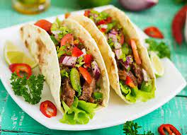

Tacos
El taco es una preparación culinaria muy popular de México que consiste en una tortilla, generalmente de maíz, que comúnmente se enrolla para contener dentro diversos ingredientes y algún tipo de salsa y verdura.
Ingredientes
- Tortillas de Harina de Maiz
- Cebolla cortada en cubos
- Pimiento
- Tomate cortado en cubos y Lechuga en hojas
- Carne de Res/Pollo/Cerdo braseada, sal pimentada
- Ajo picado
- Especias a gusto
Pasos
- Procesá dos tomates hasta lograr un puré. Cortá los tomates restantes en cubitos pequeños.
- Pelá y cortá las cebollas en aros finos. Cortá el pimiento y la lechuga en tiras finas. Pela y pica el ajo
- En una olla antiadherente cociná la carne hasta que se dore (10 minutos aproximadamente), agregá el puré de tomates, la cebolla, el ajo y las especias
- Integrá bien los ingredientes, añadí el azúcar y la Pimienta Negra Molida. Cociná a fuego bajo durante unos 20 minutos, la preparación tiene que espesarse. No olvides revolver mientras se cocina, sino se comenzará a quemar el fondo.
- En una sartén antiadherente, calentá las tortillas a fuego moderado. Sólo unos 2 minutos por lado, no más que eso.
- Colocá en cada tortilla la mezcla de la carne y por encima la lechuga, los tomates, el pimiento y la cebolla. Doblá la tortilla y estará lista para servir.